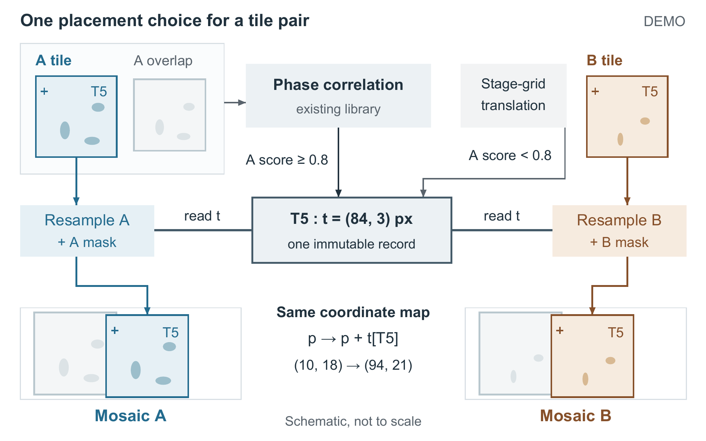
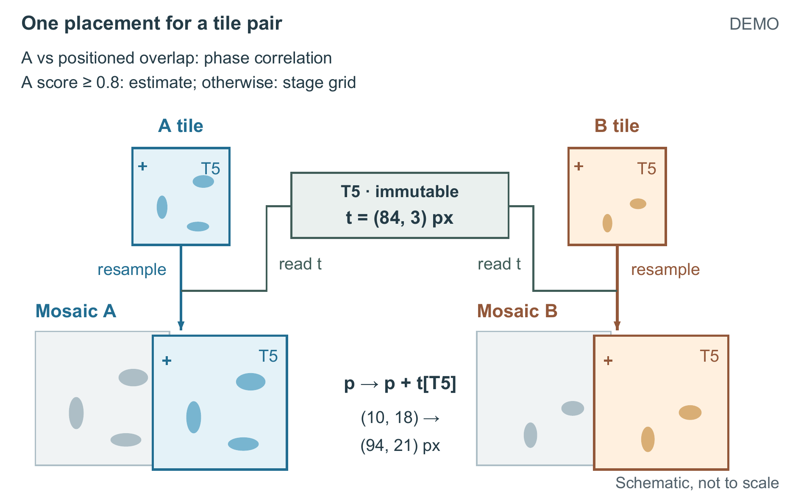
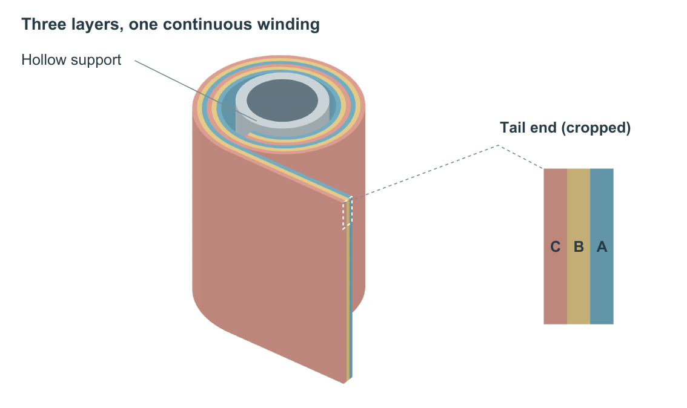

先看原图：处理步骤占据了主体
输入任务：两路图像读取同一份放置记录，再分别进入各自的拼接图。

让输入与放置后的对象直接对应
两版均按 160 × 100 mm 设计。图源保持原样，下方以相同显示尺寸预览。

结构换了，表达方式也应跟着换
三层材料的连续卷绕，用整体形体和尾端层序来说明。

带走成图，也带走修改和重建的方法
所有演示图均来自现有公开示例；没有替换输入，也没有重新包装成实验结果。
两路图像案例 · 可直接打开

卷绕材料采用“位图表面 + 矢量标签”，表面通过源码重建；没有把它标成全矢量。